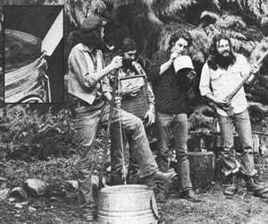

MarcBristol and other Washington State grassroots musicians wail away on agutbucket, washboard, and jug (the axe is a gag). For Marc's original homegrownmusic column--which featured gutbucket, washboard, jug, kazoo, musical saw,and spoons ""makin' and playin' ""instructions-see MOTHER NO. 50. Inset showsgutbucket ""notch and bevel""details.